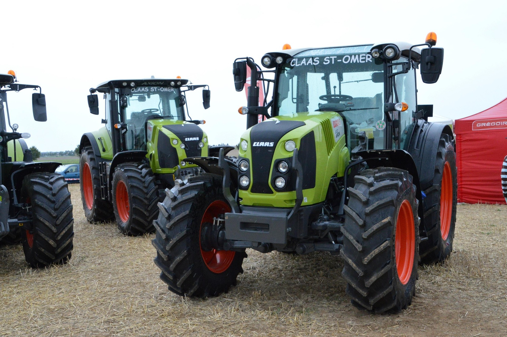

Descripción de la Situación de Aprendizaje

Descripción de la unidad
Temática
Se ha elegido una temática relacionada con la prevención de los riesgos derivados de las actividades realizadas en las Empresas del sector por parte de los alumnos/as que cursan Formación Profesional en la modalidad Dual, ya que es básico e indispensable para poder acceder a esta fase formativa en alternancia. Para ello se trabajarán de forma exhaustiva todos los posibles riesgos existentes además de las medidas preventivas para el desarrollo de las actividades prácticas.
Esta temática se selecciona por su relevancia directa con el futuro profesional del alumnado, ya que garantiza una preparación adecuada para su incorporación al entorno laboral real, fomentando la seguridad, la responsabilidad y la toma de decisiones en contextos reales.
Nivel al que va dirigido
1º GDCFGM de Técnico en Producción Agropecuaria.
Este nivel es adecuado ya que el alumnado se encuentra en una fase inicial de su formación profesional, en la que es fundamental adquirir conocimientos básicos sobre seguridad laboral antes de incorporarse a la fase de formación en alternancia.
Temporalización
La temporalización inicial se establece en 6 sesiones pues se realizarán tareas muy diversas que implicarán el trabajo en el aula, y la realización de simulaciones prácticas sobre las actuaciones a desarrollar en las empresas en la fase de prácticas (DUAL).
En las sesiones se realizará:
Sesión 1: Introducción.
Sesión 2: Identificación riesgos y causas más frecuentes de accidentes
Sesión 3: Descripción de las medidas de seguridad.
Sesión 4: Normativa.
Sesión 5: Actividad práctica.
Sesión 6: Producto final: defensa del proyecto.
Materia Implicada
Módulo Profesional: Infraestructuras e Instalaciones Agrarias, siendo un módulo donde ocurren la mayoría de los accidentes si no hay un diseño preventivo.
Idioma
Español
Descripción general de lo que se pretende que el alumnado trabaje
Es importante que el alumno conozca de primera mano cómo se trabaja en una Empresa del Sector Agroganadero, qué riesgos conlleva el mal uso de las instalaciones, equipos, herramientas y maquinaria y ser capaz de valorar críticamente los resultados obtenidos de dichas actuaciones.
Con esta actividad se pretende que el alumnado conozca y valore la importancia de conocer los principales riesgos derivados de la actividad profesional. Para ello, como producto final de esta situación de aprendizaje, entre todos elaborarán una guía didáctica sobre los principales riesgos existentes en las Empresas del Sector Agroganadero, identificando los riesgos asociados, y las medidas y equipos para prevenirlos.”, de este Módulo Profesional considera necesario que el alumno realice una serie de actividades atendiendo a las normas para asegurar la seguridad en el trabajo y prevenir accidentes y enfermedades profesionales. Actividades que se subirán al Classroom del módulo para posteriormente presentarlas al resto de la clase y establecer un debate técnico sobre los resultados obtenidos entre el grupo clase.
Además, es necesario para una mejor asimilación de la materia específica por parte del alumnado, la realización de varias actividades variadas y enriquecedoras con un perfil profesional que favorezcan la adquisición posterior del Resultado de Aprendizaje para poder acceder a la fase de Formación en Alternancia.
Para el desarrollo del producto final en mi Unidad Didáctica, he elegido utilizar Google Clasroom, Padlet, Kahoot como principales herramientas digitales, ya que son versátiles, intuitivas y ya forman parte del ecosistema digital del centro, lo cual facilita su implementación.